Engine Electrical System
The Micro 570 Analyzer
The Micro 570 Analyzer provides the ability to test the charging and starting systems, including the battery, starter and alternator.
CAUTION:
** Because of the possibility of personal injury, always use extreme caution and appropriate eye protection when working with batteries.
** When charging battery by test result, Battery must be fully charged.
To get accurate test result, battery surface voltage must have subsided ahead before test when you test battery after charged.
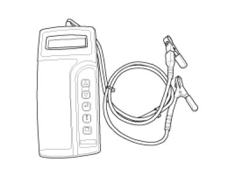
Keypad
The Micro 570 button on the key pad provide the following functions :
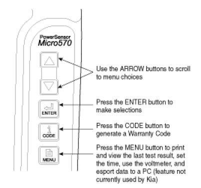
Battery Test Procedure
1. Connect the tester to the battery.
A. Red clamp to battery positive (+) terminal.
B. Black clamp to battery negative (-) terminal.
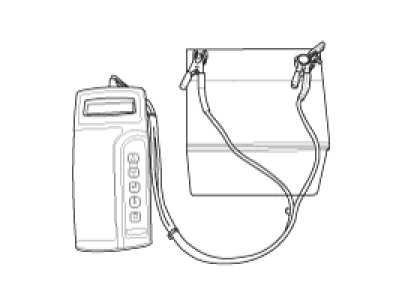
CAUTION:
- Connect clamps securely. If "CHECK CONNECTION" message is displayed on the screen, reconnect clamps securely.
2. The tester will ask if the battery is connected "IN-VEHICLE" or "OUT-OF-VEHICLE". Make your selection by pressing the arrow buttons; then press ENTER.
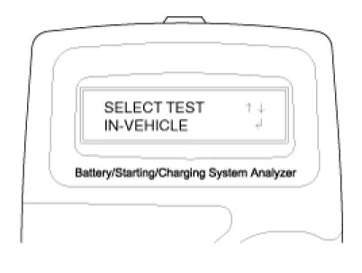
3. Select CCA and press the ENTER button.
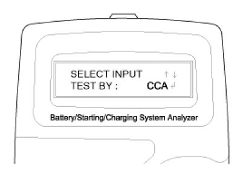
NOTE:
- CCA : Cold cranking amps, is an SAE specification for cranking batteries at -0.4°F (-18°C).
4. Set the CCA value displayed on the screen to the CCA value marked on the battery label by pressing up and down buttons and press ENTER.
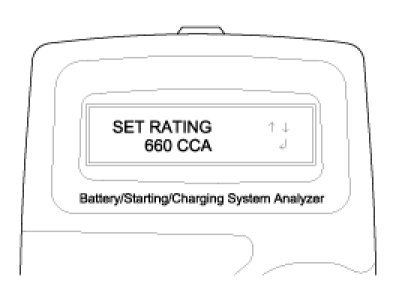
NOTE:
- The battery ratings(CCA) displayed on the tester must be identical to the ratings marked on battery label.
5. The tester will conduct battery test.
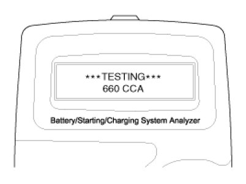
6. The tester displays battery test results including voltage and battery ratings.
Refer to the following table and take the appropriate action as recommended by the Micro 570.
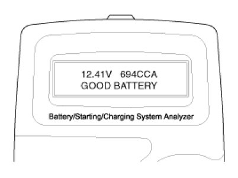
Battery Test Results
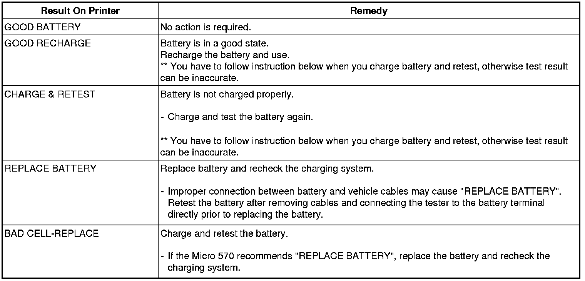
[Charge and Retest method after battery charge]
Battery charge
Set battery charger to 'Auto Mode' (The Mode that charging current drops as the battery charges.) and charge battery until charging current down close to zero or the charger alerts you with an alarm when charge is complete.
(Minimum charging time recommended: More than 3 hours with Auto Mode that explained above)
A. If battery is not fully charged, battery surface voltage will be high while the amount of current charged (CCA) in battery is low. If you measure the battery under this condition, tester may misjudge that battery sulfation occurred because the amount of current in battery is too low in comparison with battery voltage.
* Surface voltage: When battery is charged electrolyte temperature increases and chemical reaction become active resulting in an excessive increase of battery voltage.
It is known that it takes approximate one day to subside this increased surface voltage completely.
Battery Test after charge
Do not test battery right after the charge. Test battery after battery surface voltage has subsided as instructed in the following procedure.
(1) When battery charge is complete, install the battery in the vehicle.
(2) Put IG key to ON position and turn on head lamp with low beam, and wait 5 minutes. (Discharge for 5 minutes)
(3) Turn off the head lamp and IG key, and wait 5 minutes. (Waiting for 5 minutes)
(4) Remove +, - cable from the battery and test battery.
WARNING:
- Whenever filing a claim for battery, the print out of the battery test results must be attached.
Starter Test Procedure
7. After the battery test, press ENTER immediately for the starter test.
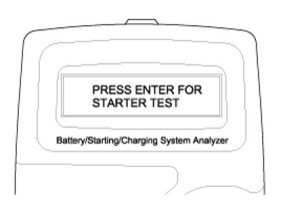
8. Start the engine.
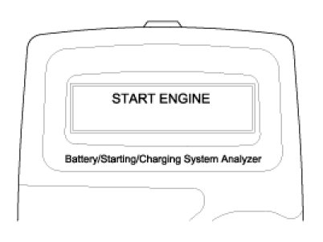
9. Cranking voltage and starter test results will be displayed on the screen.
Refer to the following table and take the appropriate action as recommended by the Micro 570.
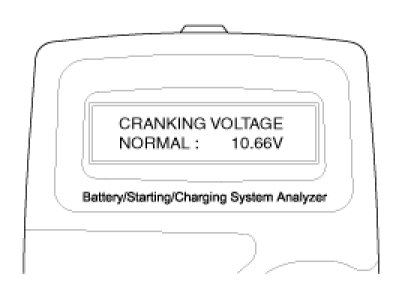
Starter Test Results

NOTE:
- When testing the vehicle with old diesel engines, the test result will not be favorable if the glow plug is not heated. Conduct the test after warming up the engine for 5 minutes.
Charging System Test Procedure
10. Press ENTER to begin charging system test.
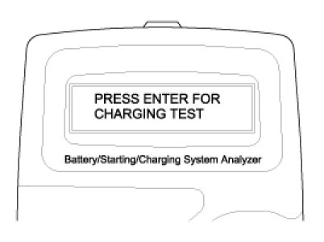
11. The tester displays the actual voltage of alternator.
Press ENTER to continue.
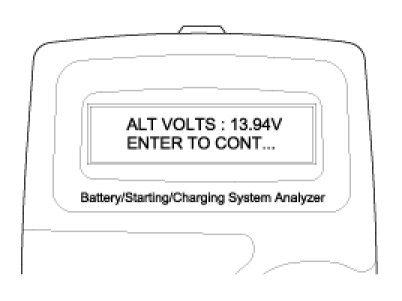
12. Turn off all electrical load and rev engine for 5 seconds with pressing the accelerator pedal. (Follow the instructions on the screen)
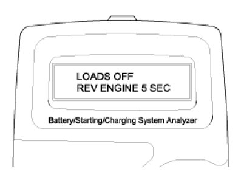

13. The message that engine RPM is detected will be displayed on the screen. Press ENTER to continue.
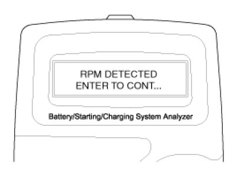
14. If the engine RPM is not detected, press ENTER after revving engine.
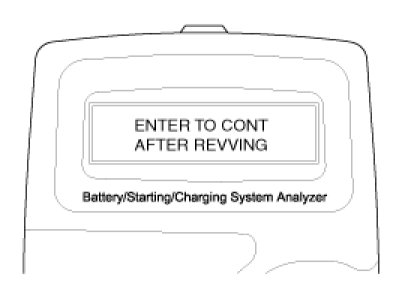
15. The tester will conduct charging system test during loads off.
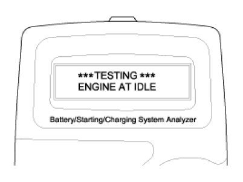
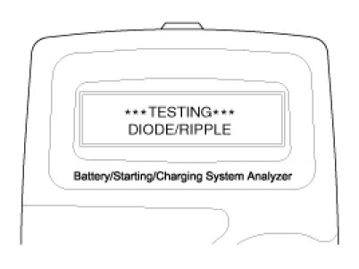
16. Turn on electrical loads (air conditioner, lamps, audio and etc). Press ENTER to continue.
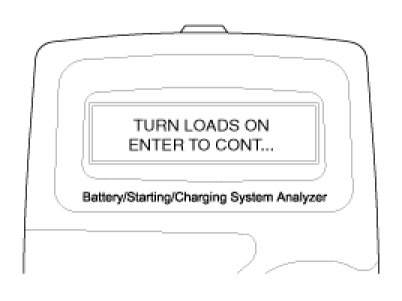
17. The tester will conduct charging system test during loads on.
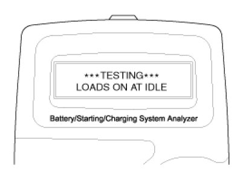
18. Rev engine for 5 seconds with pressing the accelerator pedal. (Follow the instructions on the screen)
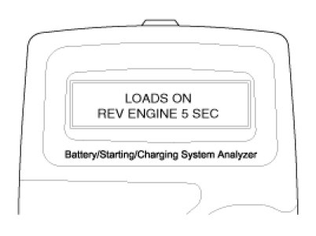
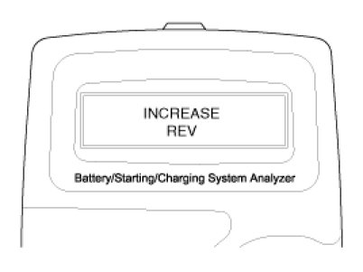

19. The message that engine RPM is detected will be displayed on the screen. Press ENTER to continue.

20. If the engine RPM is not detected, press ENTER after revving engine.

21. Turn off electrical loads (air conditioner, lamps, audio and etc). Turn the engine off.
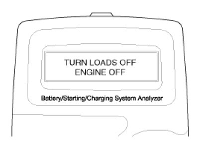
22. Charging voltage and charging system test results will be displayed on the screen.
Shut off engine end disconnect the tester clamps from the battery. Refer to the following table and take the appropriate action as recommended by the Micro 570.
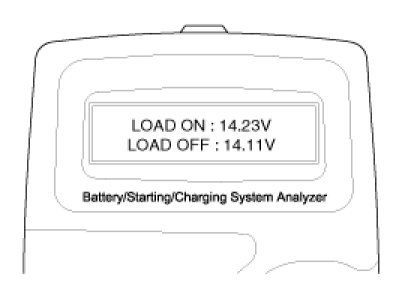
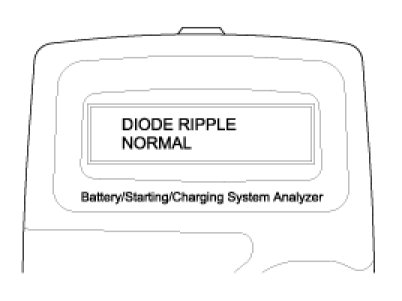
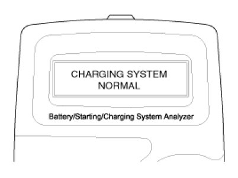
Charging System Test Results
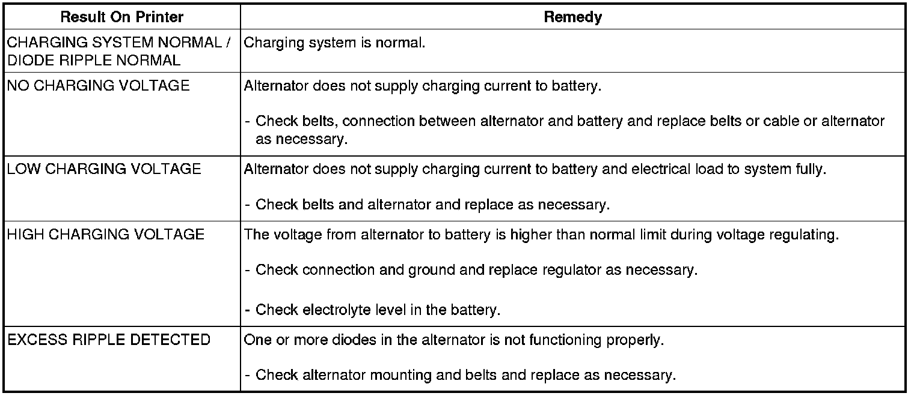
The MDX-670P Analyzer
The MDX-670P battery conductance and electrical system analyzer tests batteries as well as starting and charging systems for vehicle.
It displays the test results in seconds and features a built-in printer to provide a copy of the results.
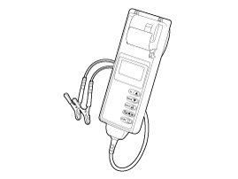
CAUTION:
1. Because of the possibility of personal injury, always use extreme caution and appropriate eye protection when working with batteries.
2. When charging battery by test result, Battery must be fully charged. To get accurate test result, battery surface voltage must have subsided ahead before test when you test battery after charged.
NOTE:
- When testing the vehicle with old diesel engines, the test result will not be favorable if the glow plug is not heated. Conduct the test after warming up the engine for 5 minutes.
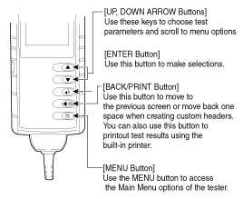
1. Connect the red clamp to the positive (+) terminal and the black clamp to the negative (-) terminal.
NOTE:
- For a proper connection, rock the clamps back and forth. The tester requires that both sides of each clamp be firmly connected before testing. A poor connection will produce a CHECK CONNECTION or WIGGLE CLAMPS message. If the message appears, clean the terminals and reconnect the clamps.
2. Scroll to and select IN VEHICLE or OUT OF VEHICLE for a battery not connected to a vehicle.
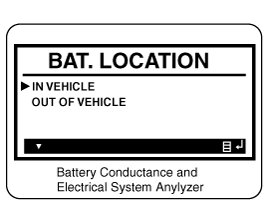
NOTE:
- Following an IN VEHICLE test you will be prompted to test the starting and charging systems.
3. Scroll to and select REGULAR FLOODED, AGM FLAT PLATE, or AGM SPIRAL where applicable.
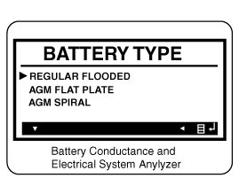
NOTE:
- If the vehicle equipped with ISG function, select the AGM FLAT PLATE.
4. Scroll to and select the battery's rating system.
NOTE:
- Mostly, the CCA value is marked on the battery label, but sometimes marked EN or SEA value. Select one of them.
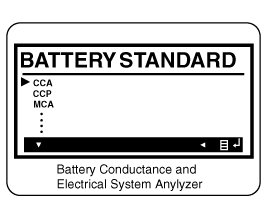
A. CCA: Cold Cranking Amps, as specified by SAE. The most common rating for cranking batteries at 0 °F (-17.8 °C).
B. EN: Europe-Norm
C. SAE: Society of Automotive Engineers, the European labeling of CCA
5. Set the selected rating value displayed on the screen to the value marked on the battery label by pressing up and down arrow buttons.
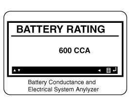
6. Press ENTER to start test.
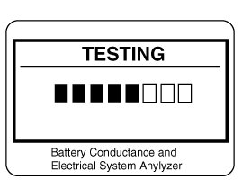
7. After several seconds the tester displays the decision on the battery's condition and the measured voltage. The tester also displays your selected battery rating and the rating units.
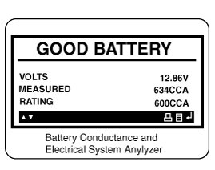
Battery Test Results
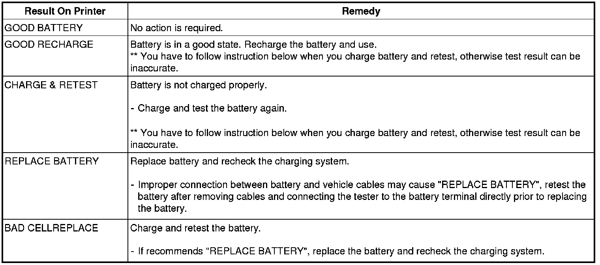
[Charge and Retest method after battery charge]
Battery charge
Set battery charger to 'Auto Mode' (The Mode that charging current drops as the battery charges.) and charge battery until charging current down close to zero or the charger alerts you with an alarm when charge is complete.(Minimum charging time recommended: More than 3 hours with Auto Mode that explained above)
A. If battery is not fully charged, battery surface voltage will be high while the amount of current charged (CCA) in battery is low. If you measure the battery under this condition, tester may misjudge that battery sulfation occurred because the amount of current in battery is too low in comparison with battery voltage.
* Surface voltage: When battery is charged electrolyte temperature increases and chemical reaction become active resulting in an excessive increase of battery voltage.
It is known that it takes approximate one day to subside this increased surface voltage completely.
Battery Test after charge
Do not test battery right after the charge. Test battery after battery surface voltage has subsided as instructed in the following procedure.
(1) When battery charge is complete, install the battery in the vehicle.
(2) Put IG key to ON position and turn on head lamp with low beam, and wait 5 minutes. (Discharge for 5 minutes)
(3) Turn off the head lamp and IG key, and wait 5 minutes. (Waiting for 5 minutes)
(4) Remove +, - cable from the battery and test battery.
NOTE:
- For an in-vehicle test, the display alternates between the test results and the message "PRESS FOR STARTER TEST.
NOTE:
- Before starting the test, inspect the alternator drive belt. A belt that is glazed or worn, or lacks the proper tension, will prevent the engine from achieving the rpm levels needed for the test.
8. Press the ENTER button to proceed with the starter test.
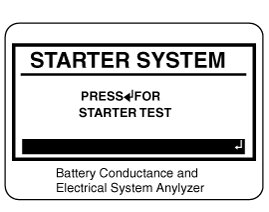
9. Start the engine when prompted.
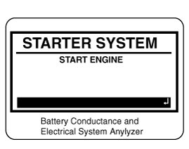
10. The tester displays the decision on the starter system, cranking voltage, and cranking time in milliseconds.
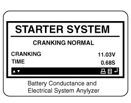
Starter Test Results
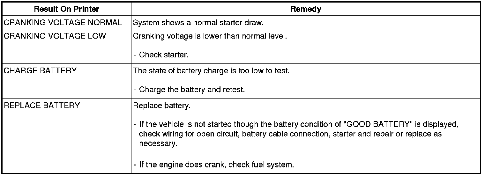
NOTE:
- For an in-vehicle test, the display alternates between the test results and the message "PRESS FOR CHARGING TEST.
Step 3: Charging System Test
11. Press the ENTER button to proceed with the charging test.
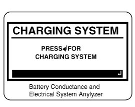
12. Rev the engine with loads off. (Following the on-screen prompts)
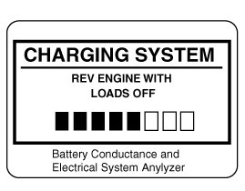
13. The message that engine RPM is detected will be displayed on the screen, idle the engine.
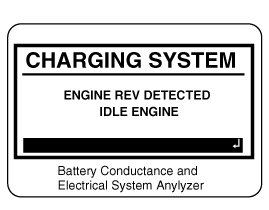
14. Turn on electrical loads (air conditioner, lamps, audio and etc). Press ENTER to continue.
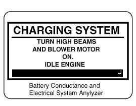
15. Turn on electrical loads (air conditioner, lamps, audio and etc). Press ENTER to continue.
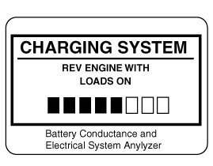
16. The message that engine RPM is detected will be displayed on the screen, idle the engine.
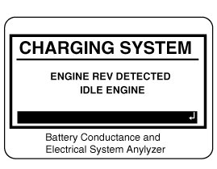
17. Turn off loads and engine.
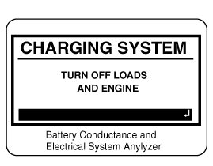
18. The Charging System decision is displayed at the end of the procedure.
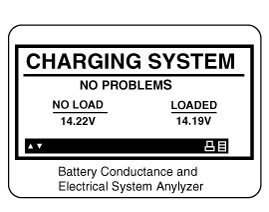
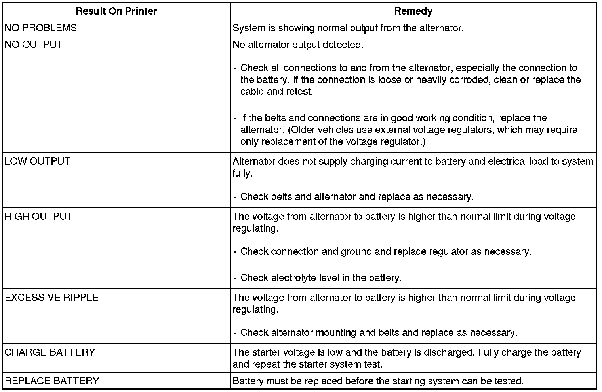
19. Press the BACK/PRINT button to print the test results or MENU to return to the Options Menu.